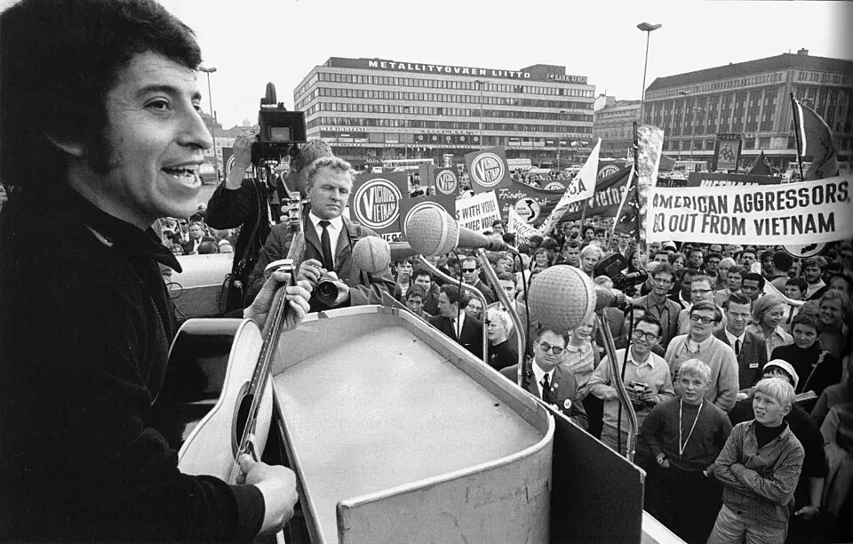

La Nueva Canción Chilena

La Nueva Canción Chilena fue un movimiento musical que surgió en la década de 1960, se consolidó hacia el final de esa década y se extendió hasta comienzos de los años setenta. Sus raíces estaban en la recuperación del folclor chileno, obra de investigadoras y cultores como Violeta Parra, Margot Loyola, Gabriela Pizarro y Héctor Pavez, y en poetas como Pablo Neruda y Nicanor Parra. A esa base sumó instrumentos y ritmos de otros países de América Latina, y la influencia de músicos como Atahualpa Yupanqui y Carlos Puebla. Formó parte de una corriente continental, la Nueva Canción Latinoamericana, a la que también perteneció la Nueva Trova cubana.
El movimiento tuvo sus propios espacios. En julio de 1965 abrió la Peña de los Parra, en la calle Carmen 340 de Santiago, y al mes siguiente se fundó otra peña en Valparaíso. En 1968 nació el sello DICAP (Discoteca del Cantar Popular). En 1969, la Universidad Católica organizó el Primer Festival de la Nueva Canción Chilena, y en el segundo, en 1970, se estrenó en el Estadio Chile la «Cantata popular Santa María de Iquique», compuesta por Luis Advis e interpretada por Quilapayún. Grupos como Quilapayún, Inti-Illimani e Illapu, y solistas como Víctor Jara, Patricio Manns y Rolando Alarcón, le dieron identidad.
Su sello principal fue el compromiso con los cambios sociales de la época. Muchos de sus artistas apoyaron a la Unidad Popular y a Salvador Allende, y la música se volvió parte de la vida política. Eso generó polémicas: la presentación de Quilapayún en el Festival de Viña del Mar, en febrero de 1973, causó un gran escándalo. Para unos, la Nueva Canción democratizó la cultura y dio voz a obreros y campesinos; para otros, mezcló el arte con la propaganda partidista. El debate sobre el arte comprometido sigue abierto.
El Golpe de Estado de 1973 terminó con su desarrollo en Chile. Víctor Jara fue detenido y asesinado por militares en el Estadio Chile el 15 de septiembre de 1973; en 2023 la Corte Suprema condenó a siete exmilitares por el crimen. La represión y el exilio dispersaron a muchos músicos, que continuaron su trabajo en el extranjero (ver Violaciones a los derechos humanos). En Santiago surgió, en la segunda mitad de los años setenta, el Canto Nuevo, y en 1975 Ricardo García fundó el sello Alerce, que reeditó grabaciones de la Nueva Canción.
Versión para niños
En los años sesenta, muchos jóvenes músicos chilenos tomaron la guitarra, el charango y la quena para cantar sobre la vida de la gente común. Se inspiraron en Violeta Parra, que había recorrido el campo reuniendo canciones antiguas. En 1965 abrió en Santiago la Peña de los Parra, un lugar donde se juntaban a cantar y a escuchar. Grupos como Quilapayún e Inti-Illimani, y cantores como Víctor Jara, crearon canciones que todavía se escuchan. Después de 1973, muchos de ellos tuvieron que irse del país.
Para maestros
Nivel sugerido: 2° medio
Objetivo: Analizar la Nueva Canción Chilena como expresión cultural de los procesos de cambio social de los años sesenta y setenta, y reflexionar sobre la relación entre arte y política.
Preguntas para la clase:
- ¿Qué tomó la Nueva Canción del folclor y qué agregó de nuevo?
- ¿Por qué la música se volvió parte de la vida política de la época?
- ¿Puede una canción ser al mismo tiempo arte y mensaje político? ¿Qué riesgos y qué aportes tiene eso?
Actividad (20–30 min): Con el texto de esta nota, los estudiantes hacen una línea de tiempo del movimiento (1965, 1968, 1969, 1970, 1973, 1975). Luego leen la nota Matanza de la Escuela Santa María de Iquique y discuten por qué una cantata de 1970 eligió contar un hecho de 1907. Cierre: observar la fotografía de Víctor Jara en Helsinki y comentar qué dice sobre la proyección internacional del movimiento.
Fuentes sugeridas: Memoria Chilena; Museo de la Memoria y los Derechos Humanos; Biblioteca Nacional Digital.
Objetivos de Aprendizaje (Currículum Nacional)
- 2° básico · HI02 OA 05 Reconocer diversas expresiones del patrimonio cultural del país y de su región, tales como manifestaciones artísticas, tradiciones folclóricas
- 2° medio · HI2M OA 08 Analizar la Guerra Fría … y dar ejemplos de cómo afectó diversas esferas, como la política, la cultura, el deporte y las ciencias
- 2° medio · HI2M OA 13 Analizar el Chile de la década de 1960 como un escenario caracterizado por la organización y la movilización de nuevos actores sociales (por ejemplo, jóvenes
Personajes
Fuentes
Revisión humana pendiente. Cómo se revisa · Reportar un error
Cómo citar: Historia de Chile. (2026). La Nueva Canción Chilena. En Historia de Chile: atlas y línea de tiempo. https://moises-salgado.github.io/historia-de-chile/momento/la-nueva-cancion-chilena.html